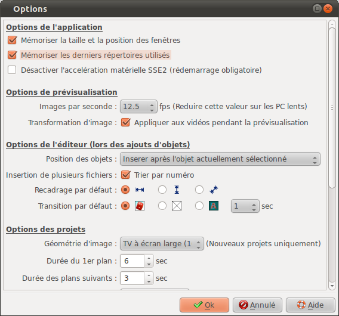

Options du programme
Options du programme La boite "Options" permet de définir les options du programmes :

| Options de l'application | |
| Mémoriser la taille et la position des fenêtres |
|
| Mémoriser les derniers répertoires utilisés |
|
| Désactiver l’accélération matérielle SSE2 | L'accélération matérielle peut poser des problèmes
sur des PC anciens ou avec des PC virtualisés.
|
| Options de prévisualisation | |
| Images par seconde |
Réduisez ce nombre sur des PC peu performant ou si la jauge du lecteur multimédia est fréquemment dans le rouge. |
| Transformation d'image (Appliquer aux vidéos pendant la prévisualisation) |
|
| Option de l'éditeur | |
| Position
des objets |
Cette option permet de
régler la position qu'occupent les nouveaux objets dans
la ligne de temps général lors des insertions.
|
| Insertion
de plusieurs fichiers |
Cette option permet de
régler la manière dont seront triés les
fichiers quand vous sélectionnez plusieurs fichiers
dans Ajout
de fichier.
|
| Recadrage
par défaut |
Défini le type de recadrage à effectuer lors de l'insertion de fichier :
|
| Transition par défaut | Défini le type de transition à insérer entre les slides lors des insertions :
|
| Options des projets | |
| Géométrie
d'image |
Sélectionne la géométrie d'image à utiliser pour la création des projets. Trois type de géométrie sont disponibles :
|
| Durée
du 1er plan |
Défini la durée par défaut du premier plan des slides lors de leur création. |
| Durée
des plans suivants |
Défini la durée par défaut à donner aux plans suivants. |
| Courbe de vitesse | Défini la courbe de vitesse à utiliser pour les transitions et les animations :
|
| Options pour la génération des vidéos | |
| Format
de fichier |
Sélectionne le type
de fichier par défaut à utiliser pour la
génération des vidéos parmi la liste
proposée. |
| Standard
vidéo |
Sélectionne le standard vidéo par défaut à utiliser, PAL ou NTSC. |
| Format |
Sélectionne le format d'image vidéo par défaut à utiliser parmi la liste proposée |
| Codec
vidéo |
Sélectionne le codec vidéo par défaut à utiliser parmi la liste proposée |
| Compression |
Sélectionne le taux de compression vidéo par défaut à utiliser parmi la liste proposée |
| Codec
audio |
Sélectionne le codec audio par défaut à utiliser parmi la liste proposée |
| Compression | Sélectionne le taux de compression audio par défaut à utiliser parmi la liste proposée |
 Les fichiers seront recadrés pour que la totalité de la largeur de l'image soit affichée
Les fichiers seront recadrés pour que la totalité de la largeur de l'image soit affichée Les fichiers seront recadrés pour que la totalité de la hauteur de l'image soit affichée
Les fichiers seront recadrés pour que la totalité de la hauteur de l'image soit affichée Les fichiers seront recadrés au mieux
Les fichiers seront recadrés au mieux Choisi aléatoirement une transition dans la bibliothèque
Choisi aléatoirement une transition dans la bibliothèque Aucune transition
Aucune transition Transition de type fondu enchaîné
Transition de type fondu enchaînéDernière modification : domledom le 06/06/2011